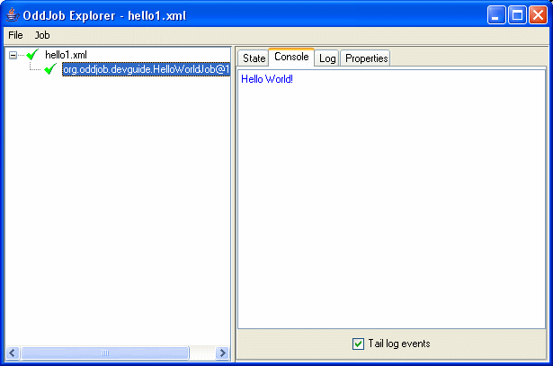
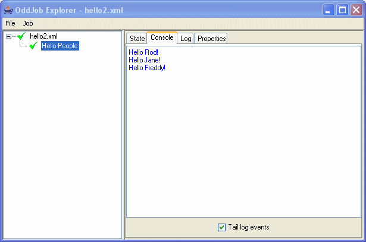

Writing an Oddjob job.
Writing a job for Oddjob is really really easy. How easy? This easy:
package org.oddjob.devguide;
public class HelloWorldJob implements Runnable {
public void run() {
System.out.println("Hello World!");
}
}
Oddjob will run any java.lang.Runnable or
java.util.concurrent.Callable as is. No need to learn a
new API!
To get Oddjob to run our job we need to create a configuration file:
<oddjob>
<job>
<bean class="org.oddjob.devguide.HelloWorldJob"/>
</job>
</oddjob>
And run it:
$ java -jar run-oddjob.jar -cp examples/classes -f examples/devguide/hello1.xml
Hello World!
Notice that the classpath option -cp is after the -jar. This is Oddjobs option, not Java's. This is because -jar ignores any existing classpath and any classpath option.
We can now also load it in Oddjob Explorer (but we need still need the classpath).
$ java -jar run-oddjob.jar -cp examples/classes
Open the file and we get:
A Job is not much use if it's not configurable, so moving quickly on lets show you how to write a configurable job.
package org.oddjob.devguide;
public class HelloPeopleJob implements Runnable {
private String[] who;
public void setWho(String[] who) {
this.who = who;
}
public String[] getWho() {
return who;
}
public void run() {
for (int i = 0; i < who.length; ++i) {
System.out.println("Hello " + who[i] + "!");
}
}
public String toString() {
return "Hello People";
}
}
A quick configuration:
<oddjob>
<job>
<bean class="org.oddjob.devguide.HelloPeopleJob">
<who>
<list>
<values>
<value value="Rod"/>
<value value="Jane"/>
<value value="Freddy"/>
</values>
</list>
</who>
</bean>
</job>
</oddjob>
And fire it up as before:
You might have noticed that this job also has a nice name. That's
because I've sneakily given our new job a toString()
method, and that's what explorer uses to label the job.
So lets take a moment to reflect on what we've got:
Not bad for a dozen lines of code.